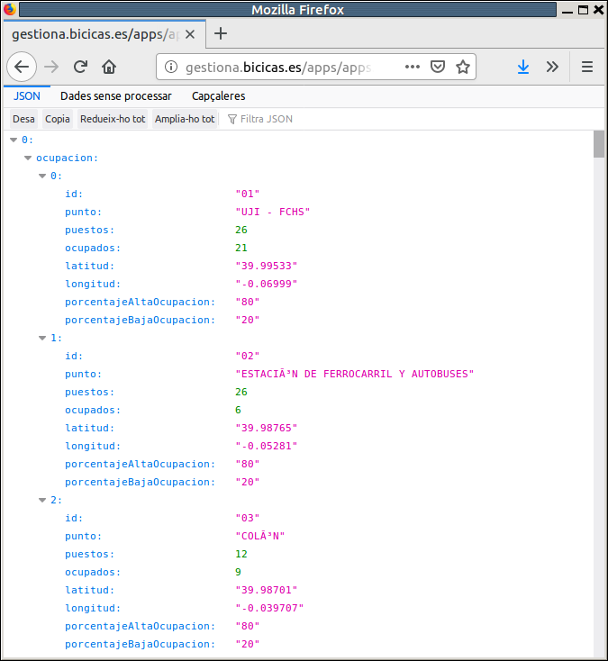

5.1 - Estructura JSON
Amb JSON podrem representar:
- Valors, de tipus caràcter (entre cometes dobles), numèric (sense cometes) , booleà (true o false) o null.
- Parelles clau valor, és a dir un nom simbòlic acompanyat d'un valor associat.. Es representen així: "nom" : valor
- Objectes, que és una col·lecció de membres, cadascú dels quals pot ser una parella clau valor, o altres objectes (fins i tot arrays): es representen entre claus, i amb els elements separats per comes: { "nom1" : "valor1" , "nom2": valor2 , valor 3 , ... }
- Arrays, que són llistes d'elements. Els elements no tenen per què tenir la mateixa estructura, però nosaltres intentarem que sí que la tinguen per coherència. Cada element pot ser un valor , una parella clau valor, un objecte o un array.
Veja'm algun exemples:
{ "p1" : 2 , "p2" : 4 , "p3" : 6 , "p4" : 8 , "p5" : 10 }
en aquest cas tenim un objecte, l'arrel, que té 5 membres, tots ells parelles clau-valor.
{
"num": 1 ,
"nom": "Andreu" ,
"departament": 10 ,
"edat": 32 ,
"sou": 1000.0
}
ara un objecte, l'arrel, també amb 5 membres que són parelles clau-valor. Observeu com la clau sempre la posem entre cometes, i el valor quan és un string també, però quan és numèric, no.
{ "empleat" :
{ "num": 1 ,
"nom": "Andreu" ,
"departament": 10 ,
"edat": 32 ,
"sou": 1000.0
}
}
en aquest cas tenim un objecte, l'arrel que consta d'un únic objecte, empleat, el qual consta de 5 membres clau-valor.
Mirem ara un exemple amb un array:
{ "notes" :
[ 5 , 7 , 8 , 7 ]
}
on tenim l'element arrel que consta d'un únic membre, notes, que és un array.
També seria correcte d'aquesta manera, per veure que l'element arrel no té perquè ser un objecte, sinó també un array
[ 5 , 7 , 8 , 7 ]
I ara un més complet amb la mateixa estructura que el fitxer XML que havíem vist en la pregunta 4. Tindrem un objecte arrel, amb només un objecte, empresa, que té un únic element empleat que és un array amb 4 elements, cadascun dels empleats:
{ "empresa":
{ "empleat":
[ {
"num": "1",
"nom": "Andreu",
"departament": "10",
"edat": "32",
"sou": "1000.0"
},
{
"num": "2",
"nom": "Bernat",
"departament": "20",
"edat": "28",
"sou": "1200.0"
},
{
"num": "3",
"nom": "Clàudia",
"departament": "10",
"edat": "26",
"sou": "1100.0"
},
{
"num": "4",
"nom": "Damià",
"departament": "10",
"edat": "40",
"sou": "1500.0"
}
]
}
}
Anem a veure un parell de casos més reals. Aquesta és la contestació que fa el WebService de Bicicas en sol·licitar l'estat actual de bicicletes en els diferents punts (en el moment de fer els apunts es consulta en l'adreça http://gestiona.bicicas.es/apps/apps.php):
[
{"ocupacion":
[
{"id":"01","punto":"UJI - FCHS","puestos":27,"ocupados":12,"latitud":"39.99533","longitud":"-0.06999", "porcentajeAltaOcupacion":"80","porcentajeBajaOcupacion":"20"},
{"id":"02","punto":"ESTACIÓN DE FERROCARRIL Y AUTOBUSES","puestos":24,"ocupados":7,"latitud":"39.98765","longitud":"-0.05281", "porcentajeAltaOcupacion":"80","porcentajeBajaOcupacion":"20"},
{"id":"03","punto":"PLAZA DE PESCADERÍA","puestos":28,"ocupados":4,"latitud":"39.98580","longitud":"-0.03798", "porcentajeAltaOcupacion":"80","porcentajeBajaOcupacion":"20"},
...
]
}
]
Com podeu comprovar, l'arrel no és un objecte, sinó un Array. En l'array només ens interessa el primer element que és un objecte amb un únic membre, ocupacion (en l'exemple no hi ha més elements, però en poden haver més en un moment determinat, quan volen fer avisos). I ocupacion és un array, amb un objecte per cada estació de bicicas, amb les parelles clau valor id, punto, puestos (les bicicletes que caben), ocupados (quantes bicicletes hi ha col·locades en aquest moment), latitud i longitud (les coordenades), ...
Nota
En realitat ens apareixerà tota la informació molt més apegada, perquè realment està en una única línia.
Per a poder observar millor l'estructura podem utilitzar un visor de json. Normalment el navegador Firefox els visualitza bé, encara que també depén de la versió. Si tenim instal·lada una versió que admet la visualització de JSON, ho intentarà interpretar, encara que segurament la millor manera de veure el format JSON és,tiar les opcions Dades sense processar --> Format d'impressió, que és la que veiem a la dreta:
|  |  |
Si la versió nostra de Firefox no visualitza el format JSON, podem buscar un visor dels molts que hi ha per internet. En la figura n'hem utilitzat un, i es pot observar com facilita molt la lectura.

Un altre exemple. Un WebService de GeoNames (una Base de Dade geogràfica gratuïta i accessible a través d'Internet) ens proporciona informació dels llocs que troba dins d'un rectangle delimitat per un latitud al nord i al sud, i una longitud a l'esti a l'oest (en l'exemple: nord 40.01, sud 39.9, est 0.1 i oest -0.1). Per exemple, http://api.geonames.org/citiesJSON?north=40.01&south=39.99&east=0.01&west=-0.01&lang=ES&username=demo torna el següent:
{
"geonames": [
{
"lng": -0.04935,
"geonameId": 2519752,
"countrycode": "ES",
"name": "Castelló de la Plana",
"fclName": "city, village,...",
"toponymName": "Castelló de la Plana",
"fcodeName": "seat of a second-order administrative division",
"wikipedia": "en.wikipedia.org/wiki/Castell%C3%B3n_de_la_Plana",
"lat": 39.98567,
"fcl": "P",
"population": 180005,
"fcode": "PPLA2"
},
{
"lng": -0.06313,
"geonameId": 2521909,
"countrycode": "ES",
"name": "Almazora",
"fclName": "city, village,...",
"toponymName": "Almassora",
"fcodeName": "populated place",
"wikipedia": "en.wikipedia.org/wiki/Almassora",
"lat": 39.94729,
"fcl": "P",
"population": 24963,
"fcode": "PPL"
},
...
]
}
A partir de l'arrel (que ara sí que és un objecte), tenim un membre: geonames, que és un array (un element per cada "lloc" trobat), on cada element té informació diversa, com el nom del lloc, les coordenades, la població, ...
Nota
De fa uns mesos que Google limita el servei anterior, i ha de ser amb un usuari validat. No valdrà la pena, per al poc profit que li trauríem. Mostrem en què consisteix el servei únicament a nivell il·lustratiu
Llicenciat sota la Llicència Creative Commons Reconeixement NoComercial CompartirIgual 2.5